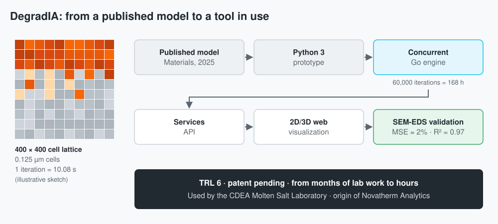

DegradIA: Corrosion
Prediction
A platform that simulates steel corrosion in molten salt for solar power plants.
It turned months of lab work into hours of simulation, and a research lab uses it today.


At a glance
| Challenge | Replace months-long experimental campaigns with a reliable prediction of 347H steel corrosion in molten salt. |
| Approach | Implement the principal investigator's cellular automaton, validate it against SEM-EDS, and move the engine from Python to Go once performance and concurrency became the bottleneck. |
| My contribution | Algorithm implementation, software architecture and development (engine, API and web visualization), and the validation pipeline. |
| Results | MSE ≈ 2% against SEM-EDS and R² = 0.97; from months to hours; TRL 6 and patent pending; used at CDEA and the origin of Novatherm Analytics. |
| Skills | Software architecture, concurrent Go and Python, performance optimization, model validation, turning research into a product. |
Context and challenge
Concentrated solar power plants store energy in molten salts, which corrode the 347H steel of tanks and pipes. Assessing that corrosion required months-long experimental campaigns, which slowed down decisions about materials.
J. C. Reinoso-Burrows, the principal investigator, had proposed a cellular automaton model to simulate the corrosion of 347H steel in solar salt at pilot-plant scale (Materials, 2025). The ANID VIU 24P0174 project aimed to turn that research into a software tool validated against measured data.
Analysis and solution
- The model. A 400 × 400 lattice of 0.125 µm cells, where each iteration represents 10.08 s of exposure: simulating the 168 h of the test takes 60,000 iterations.
- From Python to Go. I wrote the first version in Python 3, which could not run tasks truly in parallel. I rewrote the engine in Go, which provides real concurrency.
- Validation. An automated pipeline compares the simulation with SEM-EDS characterization data.
- Platform. The Go engine is completed by a services API and a 2D/3D web visualization.
My contribution
I was the researcher in charge of implementing the cellular automaton and the software architect: the engine in Python and then in Go, the API, the web visualization and the validation pipeline. I worked with J. C. Reinoso-Burrows and professors M. Cortés-Carmona, M. Henríquez and E. Fuentealba, co-authors of the Materials paper.
Results
- Model validated against SEM-EDS: mean squared error of about 2% (4.25 µm oxide layer after 168 h) and R² = 0.97 between simulation and experiment.
- The evaluation cycle went from months to hours.
- Platform at TRL 6, patent pending, with results published in Materials 18(3):713 (2025).
- It is used today by the CDEA Molten Salt Laboratory at Universidad de Antofagasta for its research.
- When the project ended, in November 2025, we founded Novatherm Analytics, where I am CTO and R&D engineer. We are integrating DegradIA with CFD simulations of dynamic corrosion in the pilot plant, aiming at a molten-salt Carnot battery.
Lessons learned
- Compute volume shapes the architecture: 60,000 iterations over 160,000 cells per simulation required real concurrency, which moved the engine to Go.
- A validated scientific model can become a product: with a real user, a pending patent and a company that carries it forward.
- What I would do differently: collect more real experimental data from the start, so machine learning could be applied on top of the model.